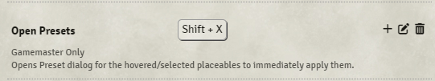

Mass Edit
The module is intended to aid mass-editing of game documents and sets of generic objects. Provides ways to create presets, generate macros, track document update history, randomize fields and more.
Basic use showcase:
Editing
Select the placeables you wish to edit and press Shift+E. You will be presented with the following modified Configuration window:

Common data shared between all placeables will be highlighted as green, differing data as orange, and flags as purple. The newly added checkboxes to the right indicate which fields will be saved on Apply.
In addition to this key-binding Token and Tile HUDs will contain a new button if multiple tokens or tiles are selected which will also open up this modified configuration window.
Search
An alternative to selecting placeables manually is to press 'Shift+F' to open a configuration window which will allow you to perform scene wide searches using the selected fields.
Text fields allow the use of wildcards: *
- Goblin*
- *Goblin
- *Go*n*
Copy/Paste
Specific data can be copied from placeables using Shift+C. Data copied this way can be pasted on any selected or hovered over placeables using Shift+V. Each placeable type has it's own "clipboard" from which data will be pasted.
Presets
Any configuration window opened using the module will have a 'Presets' header button. It will open up a window where you can store currently selected fields and re-use them later. Alternatively you can drag in a placeable from the canvas onto the form to create a preset from it.
The window can also be opened using Scene controls
and a keybind (Shift+X by default)
Brief showcase:
Adding/Subtracting
Numerical fields can be added and subtracted instead of overriding the current value. This can be done by right-clicking the numerical controls in the Mass-Edit form. Green background indicating addition, and red subtraction.

Brush Tool
This tool can be activated by clicking the brush icon in the header of Mass Edit forms.
Once selected your cursor will be transformed into a brush allowing you click and drag over placeables on the canvas to apply fields selected in the form onto them.
Permission Editing
Note and Token/Actor forms will contain a 'Permissions' header button allowing you to change access for any selected note, token, or actor.
View selected fields as JSON
All Mass Edit forms have a header button </> that will open up a dialog with currently selected fields displayed as JSON.
History
When enabled in the module settings, updates made to placeables will be tracked and available via Mass Edit forms. These updates can be selected to be applied to the currently open form or copied to the module's clipboard to be pasted on other placeables.

Macro Generator
Using the selected fields the module will generate simple macros that will update/toggle data on placeables.
Target
Defines the target for the macro
- IDs of Current Selected (IDs of placeables are stored within the macro and will only affect them)
- All Selected (macro will target selected placeables at run-time)
- All in active Scene (macro will target all placeable on the active scene)
- Tagger (macro will target Tagger module's tags)
Method
How the fields should be be applied
- Update (direct update)
- Toggle (2 alternating updates)
Randomization and Add/Subtract operators are supported but will add a dependency and require Mass Edit to be active when they are run.
Example video:
Randomization
At the moment a Patreon exclusive feature.
Randomize any numerical, color, text, image, drop-down, or coordinate values.